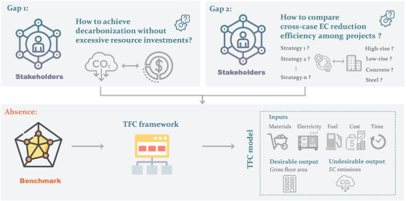

Carbon Policy, Markets & Urban Resilience

The proposed TFC framework introduces an innovative approach by adopting a total factor perspective on building projects and serves as a quantitative tool to aid stakeholders in making an informed decision with efficient and actionable carbon reduction strategies from a comprehensive, multidimensional perspective.